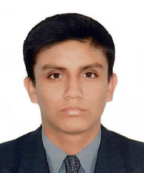

LUIS ANGEL CARRANZA PAUCAR
Profesional dedicado al Area de sistemas, con amplia experiencia e docencia de cursos de
educación superior y universitaria como:Análisis y Diseó de Sistemas. Administración de Base de
Datos y
Cursos de Informática Básica . Presento gran facilidad para el trabajo en equipo y bajo
presión, gran responsabilidad y amplio dominio en varios programas de aplicación como de programación,
software
educativo, de diseño Web y diseño gráfico.
Experiencia profesional
| Empresa / Organización |
Cargo |
Localización |
Desde -hasta |
| USAT |
Coordinador académico Sistemas |
Chiclayo |
Febrero 2018 - Actualidad |
| USAT |
Unidad de Educación a distancia |
Chiclayo |
Octubre 2016 - Diciembre 2017 |
| UNPRG |
Docente |
Lambayeque |
Marzo 2009 - Diciembre 2009 |
| Instituto UNPRG |
Docente |
Chiclayo |
Enero 2006 - Diciembre 2007 |
| Instituto Abaco |
Docente |
Chiclayo |
Enero 1999 - Setiembre 2007 |
Experiencia profesional
| Empresa / Organización |
Cargo |
Localización |
Desde -hasta |
| USAT |
Coordinador académico Sistemas |
Chiclayo |
Febrero 2018 - Actualidad |
| USAT |
Unidad de Educación a distancia |
Chiclayo |
Octubre 2016 - Diciembre 2017 |
| UNPRG |
Docente |
Lambayeque |
Marzo 2009 - Diciembre 2009 |
| Instituto UNPRG |
Docente |
Chiclayo |
Enero 2006 - Diciembre 2007 |
| Instituto Abaco |
Docente |
Chiclayo |
Enero 1999 - Setiembre 2007 |
Habilidades y conocimientos
- Desarrollo web: HTML5,CSS3,JavaScript,MySQL,responsive design,WordPress
- Analitica web/Métricas: Google Analytics,Mixpanel
- Emprendimiento: startups,Lean Startup
- Aplicaciones Ofimaticas: Microsofy Office,LibreOffice
- Marketing: email marketing,redes sociales,granificación
Otros Cursos
| Titulo |
Entidad |
Condición |
Año |
| Diseño de Materiales para Elearming |
UTN BA |
Estudiante |
2016 |
| Diplomado de Gerencia de Proyectos - Bajo el enfoque PMI 2da Edición |
USAT |
Ponente |
2015 |
| Curso de Formación Permanente en gestión del Aula Virtual Basadas en la Plataforma Moodle
|
USAT |
Estudiante |
2013 |
| Curso de Microsoft Excel |
USAT |
Pnente |
Actualidad |
| SPSS Avanzado |
INEI |
Estudiante |
2006 |